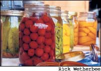
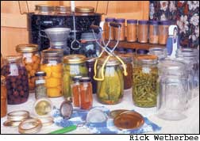
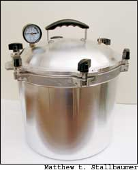

Learn To Can For Homegrown Flavor
Save money and enjoy delicious “convenience” foods all winter by learning this food-preservation skill.
By Roberta Bailey
August/September 2005
We all can agree that there is nothing like the flavor of a homegrown garden tomato. But did you also know that there is nothing like the flavor of home-canned tomatoes - or corn, peaches or salsa? After 20 years of putting up much of my own food, I took a year off because I was moving.uring that year - even though I bought high-quality organic produce, canned goods and frozen foods - I was shocked to discover how much flavor and natural sweetness was missing from these store-bought products. I wondered about their nutritional value.
Since then, I have resumed growing and putting up much of my family’s food. I appreciate the quality now more than ever, and in these times of fuel-dependent food distribution systems, I find comfort in eating food that did not have to travel more than a few yards to my table.
Although canning is extra work in the summer and fall, I have come to think of canned goods as convenience foods. To walk into my pantry at the end of a long day and pull out a jar of tomato and pinto bean soup, or to pop open a jar of strawberry applesauce for dessert, is a luxury well worth the summer work. There are many items that cannot be found in the supermarket, such as my own organic ‘Orange Banana’ tomatoes or raspberry fruit butter for our toast. And there’s a great advantage to canning food from your own back yard: You will always get the best flavor and highest quality from picking food at its freshest and processing it the same day.
My approach to putting up food is to think about how I like to eat each vegetable: I eat beets pickled or steamed; I like carrots raw and peas fresh or frozen; and corn is good fresh, canned or frozen. There is no sense in canning 30 pints of peas or mustard pickles if nobody eats them. That’s why I tend to lean toward techniques that bring out the best in each fruit or vegetable, as well as toward those that require the least effort. Why can carrots, apples or beets when they store so well in a root cellar? The same goes for spinach and broccoli, which taste much better when frozen. Most fruits and vegetables can be canned, as well as many kinds of meat, but for me, canning usually works best for soups, sauces and salsas.
Increased shelf life is another reason to consider canning. While frozen fruits, vegetables and meats only last a few months before they begin to lose quality, properly canned food will last indefinitely. However, after about a year, chemical changes slowly occur that can affect flavor, color, texture or nutritional value. To get the most out of your canned goods, always date your jars and use the older stock first. If that batch of unpopular mustard pickles is still around in three or four years, empty the jars onto the compost pile and try something your family will like better.
Low- and High-Acid Foods
To begin canning, the two main tools you will need are a water bath canner and a pressure canner. Canner selection depends on the type of food you are preserving. Although bacteria won’t survive in high-acid foods such as fruits and tomatoes, they can thrive in low-acid foods including vegetables and meats. For low-acid foods, it’s necessary to use a pressure canner, which reaches temperatures higher than the boiling point.
Perhaps the best-known type of bacteria found in improperly canned food is Clostridium botulinum, which produces a potent toxin that is odorless, colorless and deadly even in small amounts. Botulism cases are rare, but to avoid exposure, it’s important to follow any canning recipe exactly, and to be particularly cautious with low-acid foods.
Acidic foods, including most fruits, are processed in a boiling water bath. Most vegetables are low-acid foods that need to be pressure canned, and you should also use a pressure canner for any combination of acidic and nonacidic foods. However, some low-acid foods can be canned with a water bath canner if you follow a specific recipe. For example, cucumbers are low in acid, but when you add vinegar to the recipe, to make pickles, they become a high-acid food that can be processed in a water bath.
Essential Equipment
Water bath canners are available for $20 to $30, but a good pressure canner can cost as much as $200. Both should come with a rack to keep jars off the bottom of the pot.o not try to use a pressure cooker for canning; they are not large enough to hold most canning jars, and they do not maintain reliably consistent pressure.
Every canning book or instruction manual comes with charts detailing common foods and their respective canning methods, and also typically includes step-by-step instructions of the entire canning process. Local Extension offices often have free pamphlets on the proper way to can dozens of different fruits and vegetables. Another good source of canning information is the Ball Blue Book of Preserving. This is a thorough booklet with complete instructions and recipes, which you can buy for about $5 [(800) 240-3340; www.homecanning.com].
Other essential equipment includes canning jars, a large measuring cup, a long-handled spoon, a canning funnel, a jar lifter and any cooking pots needed in preparation. Canning jars come in two styles: modern jars with two-piece metal lids, and old-style jars with glass dome lids, a wire bail and a rubber gasket. The U.S.epartment of Agriculture recommends using the modern jars, and always using new metal lids. The other part of the lid, the metal bands, can be reused.
Both wide-mouth jars and regular jars work well for canning. Wide-mouth jars are a little more expensive, but they’re also easier to fill with some foods, especially whole fruits or pickles. When choosing jars, check for nicks on the rim or cracks in the jars, and discard any imperfect ones because they will not seal properly. Using recycled commercial food jars is not recommended - they are meant to be “single-use” jars, and may not withstand the high pressure of home canning.
Let the Canning Begin
Before you begin canning, read your recipe carefully and have all the equipment and ingredients on hand. To keep projects manageable, start with a small project that fits the time you have available. I avoid canning burnout by not trying to do more than one canning session a day and by interspersing large tasks, such as canning dozens of quarts of tomato sauce, with smaller, more interesting projects, such as trying out a new recipe for tomatillo-mint sauce.
Before or during your food preparation, you need to wash and heat the jars. To heat jars, immerse them in simmering water (180 degrees or higher) for at least 10 minutes, and they can remain there until needed. A dishwasher also can be used on regular cycle to wash jars and keep them hot. I often steam my jars (for 15 minutes) because it is quicker than heating volumes of water. The jar lids need to be heated for at least 10 minutes. This can be done right along with the jars, or else in a small saucepan of water heated to at least 180 degrees. Keep lids hot, removing one at a time as needed. There is a very handy magnetic tool called a “wand” that looks like a long chopstick, which easily lifts the flat lids from the water. Jar bands do not need to be heated, just wash and dry them thoroughly, and set them aside until they are needed.
When you choose a canning recipe, you will find that there are two methods of filling jars. “Cold packing” is when cold, raw food pieces are put in a hot jar and hot liquid is poured over them to fill the jar. “Hot packing” is when the foods are precooked and poured into the hot jar. Note that the processing times for these methods vary greatly depending on what type of food you are canning. Follow the chart or recipe, which also will tell you how much head space to leave in the jar.
Head space is critical: This is the amount of space between the rim of the jar and the top of the food. Too much head space and the jar may not seal correctly. Also, the processing time may not have been long enough to drive out all the air, and food may discolor at the top. Too little head space can be a problem with starchy foods, such as pumpkin or baked beans, because the food boils inside the jar and may push out the top, contaminating the sealing surface. The general rule is to leave an inch of head space for low-acid foods, including vegetables and meats; one-half inch for acidic foods such as fruits and tomatoes; and one-fourth inch for pickles, relishes, jellies and juices. Once your jars are filled, remove any air bubbles by inserting a nonmetal spatula or chopstick into the jar and gently agitating the contents.
Clean the jar rim with a clean, damp cloth to remove any stickiness or food particles that could prevent a solid seal. Then, adjust the two-piece jar lid by setting the disc on the jar rim and screwing on the band. Screw the band until you meet the initial point of resistance and no further. Place the jars on the rack in the boiling water bath or steam pressure canner and process immediately. In a boiling water bath canner, the top of the jars must be covered by 1 inch of water. Begin counting the processing time when the water returns to a rolling boil.
In a pressure canner, place the jars on the rack in a canner filled with 2 to 3 inches of simmering water. Fasten the cover, following the manufacturer’s instructions. Heat by allowing the steam to steadily vent through the petcock (the valve on the canner’s lid) for 10 minutes, and then close the petcock. Start the processing time when the pressure is brought to 10 pounds. (This usually occurs when the weight rocks steadily - follow manufacturer’s instructions for your pressure canner.)
Pressure canners will have either a weighted or a dial gauge. For a weighted-gauge pressure canner, start timing the process once the appropriate weight begins to lift and let off steam. With a dial gauge, monitor it closely and begin to time once the gauge reaches the appropriate pressure. You will have to adjust the heat source to maintain steady pressure. In altitudes higher than 1,000 feet, a dial gauge is recommended because you need to accurately increase the pressure 5 pounds for every 3,000 feet of altitude, and a dial gauge allows you to change the pressure in smaller increments than a weighted gauge.ial-gauge canners need to be checked yearly by your local Extension office or by the company you purchased it from to make sure they are reading accurately.
When processing time is complete in a pressure canner, turn off the heat and let it sit until the gauge naturally falls to zero. Wait a few minutes, then open the vent. Next, open the lid and remove the jars with a jar lifter. In a water bath canner, turn off the heat and remove jars from the water. Set them, spaced well apart, on a soft cloth. Space around the jars allows cooling to occur naturally. If a jar cools too rapidly it can break.o not tighten the lids unless they are very loose. As the jars cool, you’ll hear them “pop” when they are properly sealed. If a jar does not seal, it can be refrigerated and the food inside should be eaten in the next few days.
Once the jars are cool, remove the metal bands, wash the outside, label them with the content and date, and then store them in a cool, dark cupboard or pantry. Metal bands may corrode if left on the jar, so to store the bands, I use a wire coat hanger that has been cut close to one side of the hanger and then straightened and bent into a long hook. The bands are threaded onto it, and the entire unit can be hung from a nail. If you ever find that a jar has lost its seal during storage and that the lid comes off with no resistance, it is not safe to eat and you should discard the food.
As the growing season progresses, the shelves of the pantry begin to fill. First, there’s strawberry jam, then peas and green beans; then it’s on to tomatoes, corn, salsa, pickled hot peppers, blueberries, fruit juice, soups, baked beans, squash and applesauce. Soon, a rainbow of the summer’s colors will form, ready to brighten many a meal throughout the winter.
Roberta Bailey is a regular “Gardener’s Almanac” contributor. She lives on a 16-acre farm in Maine and often cans more than 1,000 quarts of food a year.
Pressure Canning vs. the Water Bath Method
Use a Pressure Canner:
Beans
Soups and stews
Red meat, fish and poultry
Vegetables
Use a Water Bath Canner:
Pickles
Tomatoes
Fruits: apples, berries, cherries, peaches, pears, plums and rhubarb
Fruit juices
Jams, jellies and preserves
Dilly Beans
These crunchy, quick dilly beans are my favorite pickles.
4 pounds of garden-fresh green beans
For each pint jar:
1 or 2 sprigs of fresh dill
1 clove of garlic (or to taste)
Pinch hot pepper
Pickling solution:
5 cups water
5 cups vinegar
1/2 cup pickling salt
Place dill, garlic and hot pepper in each pint jar, then pack jar with green beans (wide-mouth jars work best). Bring water, vinegar and pickling salt to a boil, and pour it over the beans, filling jars to one-fourth inch from the top. Process for 5 minutes in a boiling water bath. Yields 7 pints.
- Cheryl Long
Home Canning Resources
Canning Books
The Busy Person’s Guideto Preserving Food - By Janet Chadwick
The Big Book of Preserving the Harvest - By Carol W. Costenbader
Online Resources
National Center for Home Food Preservation
www.uga.edu/nchfp
Canning Equipment
Lehman’s
P.O. Box 41
Kidron, OH 44636
(888) 438-5346
www.lehmans.com
Carries canning jars, water bath and pressure canners and other supplies.
Pressure Cooker Outlet
21 Oak Knoll Drive
Hillsville, VA 24343
(800) 251-8824
www.pressurecooker-outlet.com
Carries a wide selection of pressure canner sizes and brands.
|
 RICK WETHERBEE Learn to can for homegrown flavor. |
 RICK WETHERBEE Fill the shelves of your pantry with food straight from your garden. Canning requires ust a few basic tools, including a water bath or pressure canner, empty jars and lids, and a jar lifter for removing jars from hot water. |
 MATTHEW T. STALLBAUMER For low-acid foods, use a pressure canner to kill harmful bacteria. |
 LYNN KARLIN High-acid foods can be canned with the water bath method, which requires a less expensive canner. |
|
|